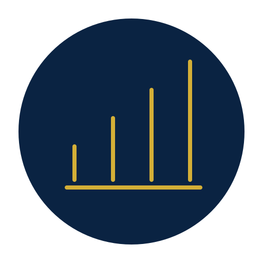

SOLUCIONES
Tres rutas. Una estrategia financiera integral.
Profundiza en el eje que tu empresa necesita sin perder la visión completa del negocio.
Liquidez & Financiamiento
Capital de trabajo, pasivos, crédito empresarial, liquidez y líneas FX & Capital.
Ver más →Gestión Estratégica de Riesgos
Divisas, forwards, opciones, derivados y estructuras avanzadas ante la volatilidad.
Ver más →Consultoría Empresarial Integral
Finanzas, contabilidad, fiscal, auditoría, gobierno corporativo y control interno.
Ver más →VIRTUS
Tu aliado de ingeniería financiera
Financiamiento + Tesorería + Riesgos + Consultoría integrados en una sola estrategia.
No vendemos productos. Diseñamos estructuras financieras y acompañamos su ejecución.
Conoce cómo trabajamosAnalizamosBalance, flujo, deuda y exposición.
EstructuramosLa estructura financiera adecuada.
NegociamosCon instituciones y aliados especializados.

ImplementamosCon seguimiento y ajustes continuos.